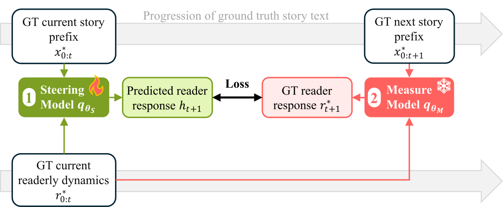
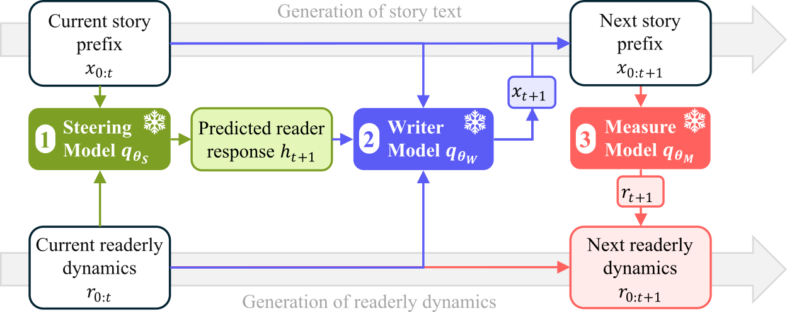
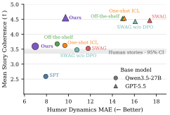
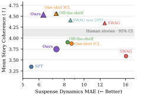

Steering Readerly Dynamics: Trajectory-Guided Story Generation with Large Language Models
1 Rutgers University2 Netflix
As a story unfolds, readers experience evolving reader responses, encompassing cognitive, affective, and evaluative aspects [1]. The time series of reader responses forms readerly dynamics, which are central to human entertainment, from football matches to detective novels [2]. In storytelling, these dynamics are particularly important for creative industries because they are positively associated with readers' immersion and subsequent social-sharing intentions [3].
Despite the wide use of LLMs for story generation, producing high-quality readerly dynamics remains difficult. Prior work has identified differences between LLM-generated and human-written stories in higher-level narrative properties, such as plot structures [4] and affective dynamics [5]. Moreover, conventional post-training such as RLVR/DPO typically optimizes for coherent, readable, and conventionally well-formed text, which suppresses dramatic dynamics in creative writing [5]. These findings highlight a gap between generating logically consistent narrative text and reproducing the evolving reader experiences characteristic of compelling stories.
While there is no single ideal trajectory of reader responses, high-quality human-written narratives provide examples of how such responses unfold over time. This motivates learning readerly dynamics directly from these narratives and using them as guidance during generation.
Modeling reader responses to guide generation
Our work unfolds as three steps: first, we extract readerly dynamics data from human-written stories, using off-the-shelf LLMs with calibrated system prompts as a proxy to human readers. Next, we use the extracted data to finetune a small LLM that predicts future reader responses from an unfinished story. Finally, we used the predicted responses as a steering signal to guide a frontier LLM, which has strong instruction following capabilities, to generate the story content for the next segment.

Training. Only the steering model is fine-tuned, using reader responses measured from human-written stories.

Inference. The steering model predicts the next reader response. Six writer candidates are scored, and the closest to the predicted response is selected.
Main results
Methods relying on implicit learning of readerly dynamics show limited effectiveness. In-context learning (ICL) yields negligible fidelity improvements, while SFT sometimes achieves higher fidelity but substantially degrades coherence. In contrast, our framework explicitly targets reader-response trajectories, reducing dynamics error by 12%–35% while largely preserving coherence.
Humor

Suspense

A qualitative example of humor dynamics
While the off-the-shelf LLM tends to introduce a punchline in nearly every segment, both human-written stand-up comedy and our generated stories exhibit a more natural alternation between setups and punchlines. By allowing moments of anticipation and relief rather than continuously delivering jokes, our method better captures the temporal structure of human readerly dynamics.
(a) Human (GT)
And even when you break it down, you see old math sneak in there. I mean, you're you're like that was old math right there. Just do that at the beginning and we won't even have to be in this there's.
I told my wife it's a long way to get to the same thing. It would be if you came to my house and you knocked on the front door and you're like: can I come in? And I was like, could you walk around and come in through the back door?
(b) Off-the-shelf Qwen3.5-27B
So you're just filling the whole page with circles and lines and arrows. You finally get the answer at the bottom, right? And the kid looks at you like, "Did I do it right?" And you're just sweating because you have no idea if that answer is right or if you accidentally drew a map to Mars.
So you just have to guess and hope for the best. You say, "Yeah, great job, look at all those arrows!" You are terrified they are going to ask for your work and you're just going to point at the doodles. It's not math anymore; it's abstract art.
(c) Ours (Qwen3.5-27B)
It's just a massive puzzle where the answer is buried under forty steps of nonsense. You spend the whole time trying to figure out the method instead of actually solving the problem. You're just scribbling away, and by the time you get the answer, you've forgotten what question you were even asking in the first place.
So you finally get twenty-seven, but you have to circle it three times, draw a pyramid around it, and write a haiku explaining why it feels that way. The teacher grades the pyramid and the poem, not the math. You're not a mathematician anymore; you're an artist with a calculator, begging for validation on a drawing that says the answer is obvious.
User study
Ideally, we would directly evaluate generated outputs through human preference studies across methods. However, substantial annotator disagreement would require a prohibitively large labeling budget to obtain reliable estimates. We therefore adopt an indirect evaluation strategy: first validating the LLM-based measure model against human judgments, then using the validated model as a proxy metric to compare generation methods.
Although the measure model is less reliable at distinguishing subtle variations, it generally agrees with human judgments when differences in reader responses are pronounced. These results support using the measure model to provide an effective learning signal for the steering model.
Conclusion
We propose a framework that explicitly models readerly dynamics in story generation, using a learned steering model to predict future reader responses and guide an off-the-shelf LLM writer. Experiments on suspense and humor show improved fidelity to readerly dynamics measured from human-written stories while maintaining story coherence. Our findings highlight the potential for more adaptive and personalized storytelling, where future work should address error accumulation in long-form generation and improve measurement reliability through broader human validation.
Cite this work
@misc{li2026steeringreaderlydynamics,
title={Steering Readerly Dynamics: Trajectory-Guided Story Generation with Large Language Models},
author={Danrui Li and Yiwei Zhao and Mubbasir Kapadia and Lingxiao Li},
year={2026},
eprint={2611.00469},
archivePrefix={arXiv},
primaryClass={cs.CL},
url={https://arxiv.org/abs/2611.00469},
}